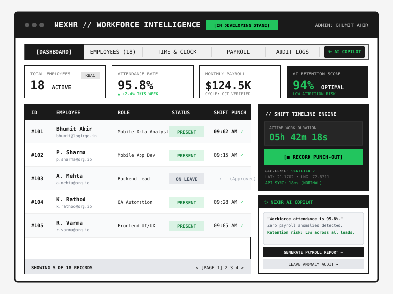

NEXHR: AI Workforce Intelligence Platform_
Full-Stack Monorepo • React 18 • Node.js • Prisma ORM • AI Copilot

Overview
NEXHR is an enterprise-ready, AI-powered Workforce Intelligence and Human Resource Management monorepo platform designed for small-to-medium businesses. Built to replace fragmented HR spreadsheets, it unifies live attendance tracking with GPS geofencing, role-based employee lifecycle directories, automated payroll calculation, and an intelligent AI Copilot that detects workforce attrition risks and payroll discrepancies in real time.
Key Modules & Monorepo Architecture
- NEXHR AI Copilot: Natural language analytics assistant analyzing workforce retention scores, leave spikes, and shift efficiency models.
- Attendance & GPS Geofence Engine: System-verified punch-in / punch-out recording with real-time shift duration countdown and coordinate validation.
- Multi-Tenant Role-Based Access Control: Strict hierarchical permission matrix separating `SUPER_ADMIN`, `COMPANY_ADMIN`, and `EMPLOYEE` portals.
- Automated Payroll & Invoicing: Dynamic salary ledger accounting for tax deductions, overtime rates, and Razorpay subscription billing.
- Immutable Audit Trails: Cryptographically logged administrative events for compliance, security reviews, and employee record integrity.
Current Status Note
DEVELOPMENT PHASE: Core backend APIs, Prisma PostgreSQL schema, and authentication layers are operational. The React frontend dashboard and AI telemetry integration are undergoing final integration testing.
TECH STACK
Frontend React 18 / Vite
Monorepo npm workspaces
Backend Node.js / Express
Database PostgreSQL / Prisma
AI Engine Python ML Services
Security JWT + RBAC + GPS
Billing Razorpay API
ENGINEER: Bhumit Ahir
STATE: IN DEVELOPING STAGE